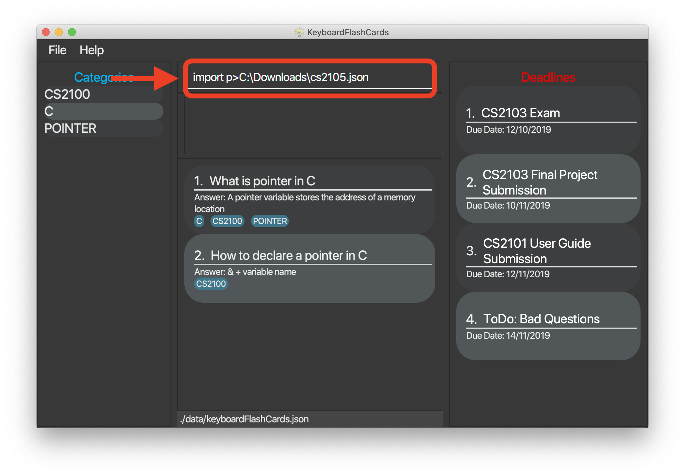

Introduction
This document details the various contributions that I have made to my team project, KeyboardFlashCards. Done as part of a second-year software engineering module, the project requires that students work in teams to morph a desktop addressbook application into another product. The project is required to conform to a number of constraints, the most significant being that the product must have primarily utilize a CLI (command-line interface); this means that the primary means of user input to the product must be through the typing of commands.
This project was the result of six weeks of hard work by my team, which comprises two final-year Computer Engineering students and three sophomore Computer Science students (including myself). All are students in the National University of Singapore (NUS).
Our final product is KeyboardFlashCards - a desktop flashcard manager application targeted at computing students (in particular, NUS School of Computing students), who will be able to use it to enhance their learning experience. It does this by simulating a real deck of flashcards on the user’s computer, complete with features including creation, editing, deletion, revision, and sharing of flashcards. The application is written in the Java programming language, and has a GUI (graphical user interface) created with the JavaFX library. It has roughly 17 KLoC, up from the original addressbook application’s 10 KLoC.
Here is a screenshot of our project:

Figure 1. The graphical user interface of KeyboardFlashCards
Please note the following symbols and formatting, which will appear throughout the rest of the document: NOTE: A point of information to take note of TIP: A tip or suggestion CAUTION: A cautionary piece of advice
Summary of contributions
This section is a summary of the contributions I have made to the team project. It includes code, documentation, and various helpful contributions. |
-
Major enhancement #1: I added the ability to export flashcards to various file formats.
-
What it does: It allows the user to save their flashcards from the application into a specified external file. The file format can be either '.docx' or '.json', and is inferred from the file extension specified by the user. To avoid clutter, any data that would only be relevant in the context of the application (e.g. a user-given rating) is not exported with the flashcards.
-
Justification: This feature greatly improves the application. The ability to export flashcards means that the user can easily generate cheat sheets (by exporting to a document file), or share flashcards with others (by exporting to a JSON file) - all through the convenience of a single command.
-
Highlights: This enhancement was designed in such a way as to maximize extensibility in the future (if a future developer ever wishes to add support for more file formats). It required an in-depth analysis of design alternatives. The implementation was challenging due to the dependence on an external library, as well as the tendency of certain file paths to break our user input parser.
-
Credits: All writing of flashcards to the '.docx' and '.json' formats is done with the use of two external libraries; these are Apache POI and Jackson, respectively.
-
-
Major enhancement #2: I added *the ability to import flashcards from an external file.
-
What it does: It allows the user to import flashcards from a JSON file (a file that ends in '.json'). The imported flashcards are added to the application, and the user will be able to use them as if they were their own.
-
Justification: This feature, when used in combination with the
exportfeature, allows users to share their flashcards with one another. -
Highlights: This feature does not import flashcards which the user already has. This is because there’s no good reason for the user to have two copies of the same flashcard. The user will be notified if a duplicate is detected in a file while importing.
-
Credits: All reading of flashcards from the
.jsonformat is done with the use of Jackson, an external library.
-
-
Code contributed: Please click on these links to see a sample of my code: [Functional code] [Test code] {give links to collated code files} (reposense link??)
-
Other contributions
-
Project management
-
Documentation
-
Created the general framework that would be used by the User Guide ( #19 )
-
Wrote the FAQ and an early version of the Command Summary section for the User Guide ( #19 )
-
Wrote the User Guide and Developer Guide content pertaining to the exporting and importing of flashcards ( #137, #141, #151, #221, #224 )
-
-
Community
-
Tools
-
Integrated a third party library (Apache POI) to the project ( #44 )
-
Integrated new Github plugins (Travis CI, Appveyor, Coveralls) to the team repository
-
-
Contributions to the User Guide
My team’s complete overhaul of the addressbook application meant that we also had to rewrite much of the User Guide. The following are excerpts of my contributions to this effort. They showcase my ability to write documentation that targets end-users. |
(start of extract from User Guide)
Export flashcards to a file: export c>CATEGORY p>FILE_PATH
You can use this command to export all your FlashCards in a particular category, to an external file.
This may be useful if you wish to publish your FlashCards somewhere, print them out, or share them with a friend.
The file will be located at the file path that you specify, and the format of the file will be inferred from the
extension. We currently support exporting to JSON (.json) and document (.docx) file formats.
Example: export c>CS2105 p>C:\Documents\cs2105.json
Suppose you have a category named CS2105, and you wanted to export the FlashCards in that category to an external file
(so you can share them with your friend). Here’s how you would go about this:
-
Type the example command given above into the command box (
export c>CS2105 p>C:\Documents\cs2105.json), as shown below.
-
Press Enter to execute the command. The results box will display a success message similar to the one shown in the screenshot below.

-
Navigate to the directory that you specified in the command (in this case, it would be 'C:\Documents'). Sure enough, your exported file is there!

| Only the questions and answers of FlashCards will be exported. |
Your file paths must be comprised solely of alphanumeric characters, spaces, and the following characters: ~\/-_!:[]()It must also end in either .json or .docx.
|
Do note that some directories may be protected by your operating system (C:\ on Windows, / on Unix). You may not be allowed to save files to these directories.
|
| Use this to export your flashcards into an easily-printable cheat sheet! Use them for your assessments or self-learning. |
Import flashcards from a JSON file: import p>FILE_PATH
You can use this command to import FlashCards from a file that you or someone else had exported to earlier.
We currently only support importing from JSON (.json) files.
Example: import p>C:\Downloads\cs2105.json
Suppose your friend has kindly exported some of his FlashCards for you to use. You have download the .json file that he sent you,
and it’s currently located at the following path: C:\Downloads\cs2105.json.
Your next step is to get those FlashCards into your copy of KFC. Here’s how you’d go about this:
-
Type the example command given above into the command box (
import p>C:\Downloads\cs2105.json), as shown below. -
Press Enter to execute the command. The results box will display a success message similar to the one shown in the screenshot below. Furthermore, the category list on the left will now display the category of the newly-imported FlashCards!

| Duplicate FlashCards will not be imported. You will be notified when we detect duplicate FlashCards in the file you provide. |
(end of extract from User Guide)
Contributions to the Developer Guide
The following are sections that I have written for the Developer Guide. They showcase my ability to write technical documentation targeting developers, as well as the technical depth of my contributions to the project. |
(start of extract from Developer Guide)
Exporting/Importing of FlashCards
Implementation
Our application currently supports the exporting of FlashCards to two file formats (.docx and .json) and importing of FlashCards from one
file format (.json). These mechanisms are primarily facilitated by the following classes:
-
ExportCommand— Embodies anexportcommand by the user; carries information about whichFlashCardsare to be exported, and to where -
ExportCommandParser— Parses user input and uses it to construct anExportCommandinstance -
ImportCommand— Embodies animportcommand by the user; carries information about whereFlashCardsare to be imported from -
ImportCommandParser— Parses user input and uses it to construct anImportCommandinstance -
ExportPath— Represents the path to a specific file - either absolute or relative to the application directory -
ExportPathFactory— Parses the user-provided file path and creates instances ofExportPath
The "export" in ExportPath is to be taken as a noun, not a verb. An ExportPath, therefore, is not the path that we export to, but the
path of an export. ExportPaths are used in both exporting and importing of files.
|
ExportPath is an abstract class that follows the factory pattern. Each subclass of ExportPath represents the path to a specific file of a
specific extension (e.g. an instance of DocumentPath represents the path to a specific document). Instances of these subclasses are created by
ExportPathFactory#getExportPath(String), which determines the appropriate subclass to create based on the extension of the provided file path String.
Once created, an ExportPath will expose the following relevant methods:
-
getPath()— Returns a JavaPathobject that represents thisExportPath -
export(List<FlashCard> list)— Exports the givenListofFlashCardsto the file path embodied by thisExportPath -
importFrom()— Attempts to importFlashCardsfrom the file path represented by thisExportPath
Not all ExportPath subclasses will implement the importFrom() method. DocumentPath, for example, does not - this is because documents are
relatively unstructured and impractical to import from, and there are other reasons for exporting to a document (e.g. to use as cheat sheet).
|
Because ExportPath follows the factory pattern, any class that deals with ExportPath or its subclasses need not know which particular subclass it is
dealing with exactly. Each ExportPath subclass will implement its own export and import methods, which, when called, will perform the required operations
without any further hassle. Of course, due to the Separation of Concerns principle, the ExportPath subclasses will not handle these directly.
Instead, they will delegate the work to other utility classes, which, in turn, interface with the external libraries necessary to complete the task.
The exporting/importing functionality is extremely easy to extend - support for new formats can be added simply through the creation of new subclasses of ExportPath.
|
All relevant classes can be found in the seedu.address.model.export package. The only exceptions are ExportCommand, ImportCommand, ExportCommandParser, and ImportCommandParser, which can be found in the seedu.address.logic package.
|
The following table shows the classes and methods that you may have to deal with when exporting to or importing from each format:
| File format | Document | JSON |
|---|---|---|
File extension |
|
|
|
|
|
Export utility class and method |
|
|
Import utility class and method |
None - importing not supported |
|
External library used |
Apache POI |
Jackson |
The number of classes supporting the import/export feature is rather large. The following class diagram will help to clarify the associations between these classes:
Figure 1: Class diagram showing the classes directly relevant to importing and exporting
The following sequence diagram shows how the export operation works when the user tries to export to a document (.docx) file:
Figure 2: Sequence diagram showing the process of exporting to a document file
| Due to a limitation of PlantUML, object lifelines in the diagram extend beyond the destroy markers. This, of course, should be ignored. |
The following activity diagram summarizes what happens when a user executes an export command:

Figure 3: Activity diagram of when the user executes an export command
The following activity diagram summarizes what happens when a user executes an import command:
Figure 4: Activity diagram of when the user executes an import command
Design considerations
This section describes some of the design considerations that went into the implementation of this feature. |
Aspect: Implementation of exporting functionality for different file formats
-
Alternative 1 (current choice): Have a single
exportcommand - leave file formats to be handled by underlying classes-
Pros: Is easier for user to remember; can easily be extended to support additional file formats
-
Cons: Is harder to implement
-
-
Alternative 2: Have a separate command for exporting to each format (e.g.
exportdoc,exportjson, etc.)-
Pros: Is easier to implement
-
Cons: Results in user having more commands to remember; new commands must be added to support new file formats
-
| Alternative 1 was preferred for its ease of extensibility. |
Aspect: Method of obtaining desired FlashCards for exporting
-
Alternative 1: Update the
Modelto show all desiredFlashCards, then export all of saidFlashCards-
Pros: Is easy to implement as it makes use of existing logic in
Model; user receives immediate visual feedback regarding which specificFlashCardswere exported -
Cons: May cause confusion -
exportcommand does not imply that the selectedFlashCardswill also be shown to the user
-
-
Alternative 2 (current choice): Implement a new method in
Modelthat returns the selectedFlashCards, without updating the on-screen list-
Pros: Will not cause confusion to user -
exportcommand does exactly what one would expect it to do -
Cons: Is harder to implement and might result in duplication of logic
-
| Alternative 2 was preferred as it provides users with an experience closer to what they would expect. |
Aspect: Parsing of file path from user input
The original AddressBook application, from which KeyboardFlashCards was morphed, delimited its command arguments using slash-containing flags
(e.g. c/CATEGORY). This sometimes caused parsing problems due to the nature of file paths, which likewise contain slashes.
|
-
Alternative 1: Read file path as-is, using the existing AddressBook parser
-
Pros: Does not require further code changes
-
Cons: Means that errors may occur for certain file paths
-
-
Alternative 2: Disallow user from selecting file path - instead, always export to and import from a specific directory
-
Pros: Is somewhat easy to implement
-
Cons: Requires user to navigate to the specified directory; requires a means of finding alternatives if the default directory does not exist
-
-
Alternative 3: Ask user to replace slashes in file path with another character
-
Pros: Is very easy to implement
-
Cons: Greatly inconveniences the user; extra work must be done to restore the input to the original file path
-
-
Alternative 4 (current choice): Overhaul the AddressBook parser to use
>rather than/as a delimiter-
Pros: Provides the user with the most power and convenience
-
Cons: Might possibly break existing functional and test code; may require an additional button press from the user (
Shift) in order to type>
-
| Alternative 4 was preferred as it provides users with the greatest overall convenience. |
(end of extract from Developer Guide)